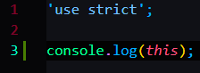

The global object is Window object, which basically contians everything.


The result is the jonas object


This is called method borrowing


This means that the this keyword in the object of jonas borrowed by matilda object points to the object matilda.